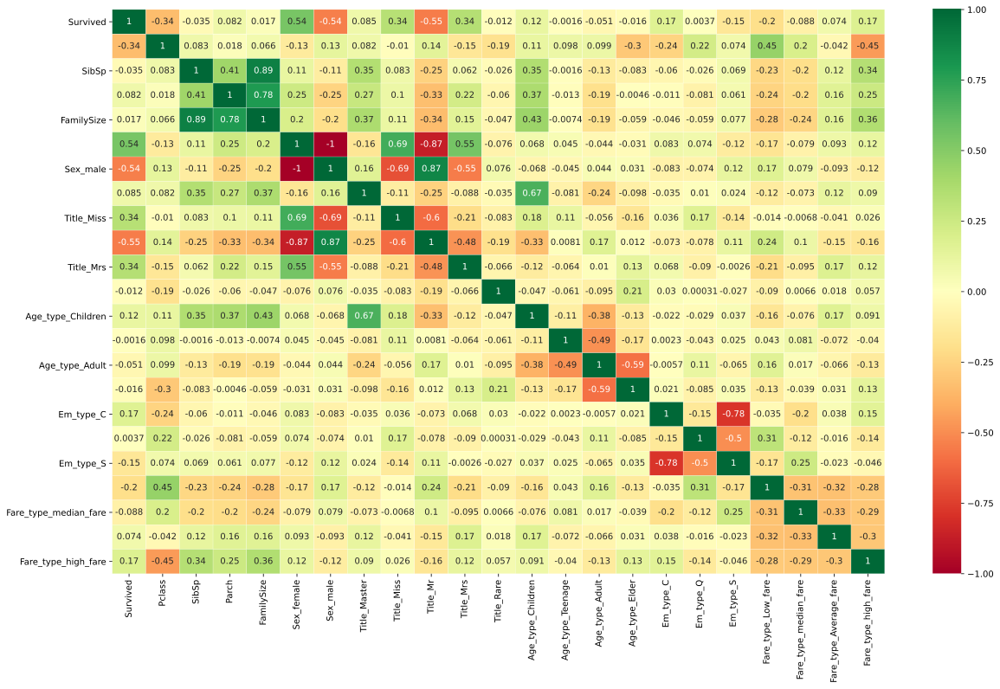
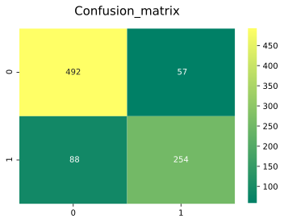
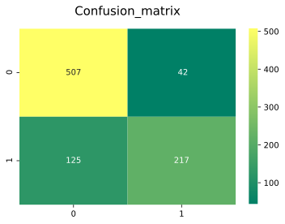
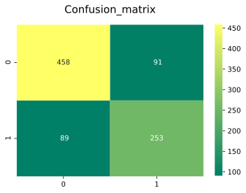
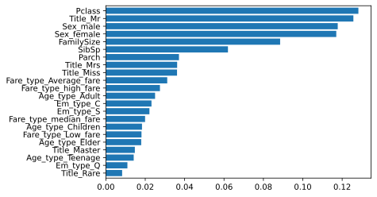

Titanic Model with 90% accuracy¶
https://www.kaggle.com/vinothan/titanic-model-with-90-accuracy
[1]:
import numpy as np
import pandas as pd
import matplotlib.pyplot as plt
import seaborn as sns
import warnings
warnings.filterwarnings('ignore')
%matplotlib inline
[2]:
train_df=pd.read_csv("./datasets/titanic/train.csv")
test_df=pd.read_csv("./datasets/titanic/test.csv")
[3]:
train_df.head()
[3]:
| PassengerId | Survived | Pclass | Name | Sex | Age | SibSp | Parch | Ticket | Fare | Cabin | Embarked | |
|---|---|---|---|---|---|---|---|---|---|---|---|---|
| 0 | 1 | 0 | 3 | Braund, Mr. Owen Harris | male | 22.0 | 1 | 0 | A/5 21171 | 7.2500 | NaN | S |
| 1 | 2 | 1 | 1 | Cumings, Mrs. John Bradley (Florence Briggs Th... | female | 38.0 | 1 | 0 | PC 17599 | 71.2833 | C85 | C |
| 2 | 3 | 1 | 3 | Heikkinen, Miss. Laina | female | 26.0 | 0 | 0 | STON/O2. 3101282 | 7.9250 | NaN | S |
| 3 | 4 | 1 | 1 | Futrelle, Mrs. Jacques Heath (Lily May Peel) | female | 35.0 | 1 | 0 | 113803 | 53.1000 | C123 | S |
| 4 | 5 | 0 | 3 | Allen, Mr. William Henry | male | 35.0 | 0 | 0 | 373450 | 8.0500 | NaN | S |
[4]:
print('__Test_DataSet_')
test_df.head()
__Test_DataSet_
[4]:
| PassengerId | Pclass | Name | Sex | Age | SibSp | Parch | Ticket | Fare | Cabin | Embarked | |
|---|---|---|---|---|---|---|---|---|---|---|---|
| 0 | 892 | 3 | Kelly, Mr. James | male | 34.5 | 0 | 0 | 330911 | 7.8292 | NaN | Q |
| 1 | 893 | 3 | Wilkes, Mrs. James (Ellen Needs) | female | 47.0 | 1 | 0 | 363272 | 7.0000 | NaN | S |
| 2 | 894 | 2 | Myles, Mr. Thomas Francis | male | 62.0 | 0 | 0 | 240276 | 9.6875 | NaN | Q |
| 3 | 895 | 3 | Wirz, Mr. Albert | male | 27.0 | 0 | 0 | 315154 | 8.6625 | NaN | S |
| 4 | 896 | 3 | Hirvonen, Mrs. Alexander (Helga E Lindqvist) | female | 22.0 | 1 | 1 | 3101298 | 12.2875 | NaN | S |
[5]:
def missingdata(data):
total = data.isnull().sum().sort_values(ascending = False)
percent = (data.isnull().sum()/data.isnull().count()*100).sort_values(ascending = False)
ms=pd.concat([total, percent], axis=1, keys=['Total', 'Percent'])
ms= ms[ms["Percent"] > 0]
f,ax =plt.subplots(figsize=(8,6))
plt.xticks(rotation='90')
fig=sns.barplot(ms.index, ms["Percent"],color="green",alpha=0.8)
plt.xlabel('Features', fontsize=15)
plt.ylabel('Percent of missing values', fontsize=15)
plt.title('Percent missing data by feature', fontsize=15)
return ms
[6]:
missingdata(train_df)
[6]:
| Total | Percent | |
|---|---|---|
| Cabin | 687 | 77.104377 |
| Age | 177 | 19.865320 |
| Embarked | 2 | 0.224467 |
[7]:
missingdata(test_df)
[7]:
| Total | Percent | |
|---|---|---|
| Cabin | 327 | 78.229665 |
| Age | 86 | 20.574163 |
| Fare | 1 | 0.239234 |
[8]:
test_df['Age'].mean()
[8]:
30.272590361445783
[9]:
train_df['Embarked'].fillna(train_df['Embarked'].mode()[0], inplace = True)
[10]:
test_df['Fare'].fillna(test_df['Fare'].median(), inplace = True)
[11]:
drop_column = ['Cabin']
train_df.drop(drop_column, axis=1, inplace = True)
test_df.drop(drop_column,axis=1,inplace=True)
[12]:
test_df['Age'].fillna(test_df['Age'].median(), inplace = True)
train_df['Age'].fillna(train_df['Age'].median(), inplace = True)
[13]:
print('check the nan value in train data')
print(train_df.isnull().sum())
print('___'*30)
print('check the nan value in test data')
print(test_df.isnull().sum())
check the nan value in train data
PassengerId 0
Survived 0
Pclass 0
Name 0
Sex 0
Age 0
SibSp 0
Parch 0
Ticket 0
Fare 0
Embarked 0
dtype: int64
__________________________________________________________________________________________
check the nan value in test data
PassengerId 0
Pclass 0
Name 0
Sex 0
Age 0
SibSp 0
Parch 0
Ticket 0
Fare 0
Embarked 0
dtype: int64
[14]:
all_data=[train_df,test_df]
[15]:
for dataset in all_data:
dataset['FamilySize'] = dataset['SibSp'] + dataset['Parch'] + 1
[16]:
import re
# Define function to extract titles from passenger names
def get_title(name):
title_search = re.search(' ([A-Za-z]+)\.', name)
# If the title exists, extract and return it.
if title_search:
return title_search.group(1)
return ""
# Create a new feature Title, containing the titles of passenger names
for dataset in all_data:
dataset['Title'] = dataset['Name'].apply(get_title)
# Group all non-common titles into one single grouping "Rare"
for dataset in all_data:
dataset['Title'] = dataset['Title'].replace(['Lady', 'Countess','Capt', 'Col','Don',
'Dr', 'Major', 'Rev', 'Sir', 'Jonkheer', 'Dona'], 'Rare')
dataset['Title'] = dataset['Title'].replace('Mlle', 'Miss')
dataset['Title'] = dataset['Title'].replace('Ms', 'Miss')
dataset['Title'] = dataset['Title'].replace('Mme', 'Mrs')
[17]:
## create bin for age features
for dataset in all_data:
dataset['Age_bin'] = pd.cut(dataset['Age'], bins=[0,12,20,40,120], labels=['Children','Teenage','Adult','Elder'])
[18]:
## create bin for fare features
for dataset in all_data:
dataset['Fare_bin'] = pd.cut(dataset['Fare'], bins=[0,7.91,14.45,31,120], labels=['Low_fare','median_fare',
'Average_fare','high_fare'])
[19]:
### for our reference making a copy of both DataSet start working for copy of dataset
traindf=train_df
testdf=test_df
[20]:
all_dat=[traindf,testdf]
[21]:
for dataset in all_dat:
drop_column = ['Age','Fare','Name','Ticket']
dataset.drop(drop_column, axis=1, inplace = True)
[22]:
drop_column = ['PassengerId']
traindf.drop(drop_column, axis=1, inplace = True)
[23]:
testdf.head(2)
[23]:
| PassengerId | Pclass | Sex | SibSp | Parch | Embarked | FamilySize | Title | Age_bin | Fare_bin | |
|---|---|---|---|---|---|---|---|---|---|---|
| 0 | 892 | 3 | male | 0 | 0 | Q | 1 | Mr | Adult | Low_fare |
| 1 | 893 | 3 | female | 1 | 0 | S | 2 | Mrs | Elder | Low_fare |
[24]:
traindf = pd.get_dummies(traindf, columns = ["Sex","Title","Age_bin","Embarked","Fare_bin"],
prefix=["Sex","Title","Age_type","Em_type","Fare_type"])
[25]:
testdf = pd.get_dummies(testdf, columns = ["Sex","Title","Age_bin","Embarked","Fare_bin"],
prefix=["Sex","Title","Age_type","Em_type","Fare_type"])
[26]:
testdf.head()
[26]:
| PassengerId | Pclass | SibSp | Parch | FamilySize | Sex_female | Sex_male | Title_Master | Title_Miss | Title_Mr | ... | Age_type_Teenage | Age_type_Adult | Age_type_Elder | Em_type_C | Em_type_Q | Em_type_S | Fare_type_Low_fare | Fare_type_median_fare | Fare_type_Average_fare | Fare_type_high_fare | |
|---|---|---|---|---|---|---|---|---|---|---|---|---|---|---|---|---|---|---|---|---|---|
| 0 | 892 | 3 | 0 | 0 | 1 | 0 | 1 | 0 | 0 | 1 | ... | 0 | 1 | 0 | 0 | 1 | 0 | 1 | 0 | 0 | 0 |
| 1 | 893 | 3 | 1 | 0 | 2 | 1 | 0 | 0 | 0 | 0 | ... | 0 | 0 | 1 | 0 | 0 | 1 | 1 | 0 | 0 | 0 |
| 2 | 894 | 2 | 0 | 0 | 1 | 0 | 1 | 0 | 0 | 1 | ... | 0 | 0 | 1 | 0 | 1 | 0 | 0 | 1 | 0 | 0 |
| 3 | 895 | 3 | 0 | 0 | 1 | 0 | 1 | 0 | 0 | 1 | ... | 0 | 1 | 0 | 0 | 0 | 1 | 0 | 1 | 0 | 0 |
| 4 | 896 | 3 | 1 | 1 | 3 | 1 | 0 | 0 | 0 | 0 | ... | 0 | 1 | 0 | 0 | 0 | 1 | 0 | 1 | 0 | 0 |
5 rows × 23 columns
[27]:
sns.heatmap(traindf.corr(),annot=True,cmap='RdYlGn',linewidths=0.2) #data.corr()-->correlation matrix
fig=plt.gcf()
fig.set_size_inches(20,12)
plt.show()

[28]:
g = sns.pairplot(data=train_df, hue='Survived', palette = 'seismic',
size=1.2,diag_kind = 'kde',diag_kws=dict(shade=True),plot_kws=dict(s=10) )
g.set(xticklabels=[])
[28]:
<seaborn.axisgrid.PairGrid at 0x7fb8c7e28390>

[29]:
from sklearn.model_selection import train_test_split #for split the data
from sklearn.metrics import accuracy_score #for accuracy_score
from sklearn.model_selection import KFold #for K-fold cross validation
from sklearn.model_selection import cross_val_score #score evaluation
from sklearn.model_selection import cross_val_predict #prediction
from sklearn.metrics import confusion_matrix #for confusion matrix
all_features = traindf.drop("Survived",axis=1)
Targeted_feature = traindf["Survived"]
X_train,X_test,y_train,y_test = train_test_split(all_features,Targeted_feature,test_size=0.3,random_state=42)
X_train.shape,X_test.shape,y_train.shape,y_test.shape
[29]:
((623, 22), (268, 22), (623,), (268,))
[30]:
# machine learning
from sklearn.linear_model import LogisticRegression # Logistic Regression
model = LogisticRegression()
model.fit(X_train,y_train)
prediction_lr=model.predict(X_test)
print('--------------The Accuracy of the model----------------------------')
print('The accuracy of the Logistic Regression is',round(accuracy_score(prediction_lr,y_test)*100,2))
kfold = KFold(n_splits=10, random_state=22) # k=10, split the data into 10 equal parts
result_lr=cross_val_score(model,all_features,Targeted_feature,cv=10,scoring='accuracy')
print('The cross validated score for Logistic REgression is:',round(result_lr.mean()*100,2))
y_pred = cross_val_predict(model,all_features,Targeted_feature,cv=10)
sns.heatmap(confusion_matrix(Targeted_feature,y_pred),annot=True,fmt='3.0f',cmap="summer")
plt.title('Confusion_matrix', y=1.05, size=15)
--------------The Accuracy of the model----------------------------
The accuracy of the Logistic Regression is 82.46
The cross validated score for Logistic REgression is: 81.93
[30]:
Text(0.5, 1.05, 'Confusion_matrix')
[31]:
# Random Forests
from sklearn.ensemble import RandomForestClassifier
model = RandomForestClassifier(criterion='gini', n_estimators=700,
min_samples_split=10,min_samples_leaf=1,
max_features='auto',oob_score=True,
random_state=1,n_jobs=-1)
model.fit(X_train,y_train)
prediction_rm=model.predict(X_test)
print('--------------The Accuracy of the model----------------------------')
print('The accuracy of the Random Forest Classifier is',round(accuracy_score(prediction_rm,y_test)*100,2))
kfold = KFold(n_splits=10, random_state=22) # k=10, split the data into 10 equal parts
result_rm=cross_val_score(model,all_features,Targeted_feature,cv=10,scoring='accuracy')
print('The cross validated score for Random Forest Classifier is:',round(result_rm.mean()*100,2))
y_pred = cross_val_predict(model,all_features,Targeted_feature,cv=10)
sns.heatmap(confusion_matrix(Targeted_feature,y_pred),annot=True,fmt='3.0f',cmap="summer")
plt.title('Confusion_matrix', y=1.05, size=15)
--------------The Accuracy of the model----------------------------
The accuracy of the Random Forest Classifier is 82.46
The cross validated score for Random Forest Classifier is: 83.73
[31]:
Text(0.5, 1.05, 'Confusion_matrix')

[32]:
# Support Vector Machines
from sklearn.svm import SVC, LinearSVC
model = SVC()
model.fit(X_train,y_train)
prediction_svm=model.predict(X_test)
print('--------------The Accuracy of the model----------------------------')
print('The accuracy of the Support Vector Machines Classifier is',round(accuracy_score(prediction_svm,y_test)*100,2))
kfold = KFold(n_splits=10, random_state=22) # k=10, split the data into 10 equal parts
result_svm=cross_val_score(model,all_features,Targeted_feature,cv=10,scoring='accuracy')
print('The cross validated score for Support Vector Machines Classifier is:',round(result_svm.mean()*100,2))
y_pred = cross_val_predict(model,all_features,Targeted_feature,cv=10)
sns.heatmap(confusion_matrix(Targeted_feature,y_pred),annot=True,fmt='3.0f',cmap="summer")
plt.title('Confusion_matrix', y=1.05, size=15)
--------------The Accuracy of the model----------------------------
The accuracy of the Support Vector Machines Classifier is 83.58
The cross validated score for Support Vector Machines Classifier is: 83.16
[32]:
Text(0.5, 1.05, 'Confusion_matrix')
[33]:
##knn
from sklearn.neighbors import KNeighborsClassifier
model = KNeighborsClassifier(n_neighbors = 4)
model.fit(X_train,y_train)
prediction_knn=model.predict(X_test)
print('--------------The Accuracy of the model----------------------------')
print('The accuracy of the K Nearst Neighbors Classifier is',round(accuracy_score(prediction_knn,y_test)*100,2))
kfold = KFold(n_splits=10, random_state=22) # k=10, split the data into 10 equal parts
result_knn=cross_val_score(model,all_features,Targeted_feature,cv=10,scoring='accuracy')
print('The cross validated score for K Nearest Neighbors Classifier is:',round(result_knn.mean()*100,2))
y_pred = cross_val_predict(model,all_features,Targeted_feature,cv=10)
sns.heatmap(confusion_matrix(Targeted_feature,y_pred),annot=True,fmt='3.0f',cmap="summer")
plt.title('Confusion_matrix', y=1.05, size=15)
--------------The Accuracy of the model----------------------------
The accuracy of the K Nearst Neighbors Classifier is 81.34
The cross validated score for K Nearest Neighbors Classifier is: 81.26
[33]:
Text(0.5, 1.05, 'Confusion_matrix')

[34]:
# Gaussian Naive Bayes
from sklearn.naive_bayes import GaussianNB
model= GaussianNB()
model.fit(X_train,y_train)
prediction_gnb=model.predict(X_test)
print('--------------The Accuracy of the model----------------------------')
print('The accuracy of the Gaussian Naive Bayes Classifier is',round(accuracy_score(prediction_gnb,y_test)*100,2))
kfold = KFold(n_splits=10, random_state=22) # k=10, split the data into 10 equal parts
result_gnb=cross_val_score(model,all_features,Targeted_feature,cv=10,scoring='accuracy')
print('The cross validated score for Gaussian Naive Bayes classifier is:',round(result_gnb.mean()*100,2))
y_pred = cross_val_predict(model,all_features,Targeted_feature,cv=10)
sns.heatmap(confusion_matrix(Targeted_feature,y_pred),annot=True,fmt='3.0f',cmap="summer")
plt.title('Confusion_matrix', y=1.05, size=15)
--------------The Accuracy of the model----------------------------
The accuracy of the Gaussian Naive Bayes Classifier is 79.48
The cross validated score for Gaussian Naive Bayes classifier is: 79.8
[34]:
Text(0.5, 1.05, 'Confusion_matrix')

[35]:
# Decision Tree
from sklearn.tree import DecisionTreeClassifier
model= DecisionTreeClassifier(criterion='gini',
min_samples_split=10,min_samples_leaf=1,
max_features='auto')
model.fit(X_train,y_train)
prediction_tree=model.predict(X_test)
print('--------------The Accuracy of the model----------------------------')
print('The accuracy of the DecisionTree Classifier is',round(accuracy_score(prediction_tree,y_test)*100,2))
kfold = KFold(n_splits=10, random_state=22) # k=10, split the data into 10 equal parts
result_tree=cross_val_score(model,all_features,Targeted_feature,cv=10,scoring='accuracy')
print('The cross validated score for Decision Tree classifier is:',round(result_tree.mean()*100,2))
y_pred = cross_val_predict(model,all_features,Targeted_feature,cv=10)
sns.heatmap(confusion_matrix(Targeted_feature,y_pred),annot=True,fmt='3.0f',cmap="summer")
plt.title('Confusion_matrix', y=1.05, size=15)
--------------The Accuracy of the model----------------------------
The accuracy of the DecisionTree Classifier is 79.1
The cross validated score for Decision Tree classifier is: 81.15
[35]:
Text(0.5, 1.05, 'Confusion_matrix')
[36]:
from sklearn.ensemble import AdaBoostClassifier
model= AdaBoostClassifier()
model.fit(X_train,y_train)
prediction_adb=model.predict(X_test)
print('--------------The Accuracy of the model----------------------------')
print('The accuracy of the AdaBoostClassifier is',round(accuracy_score(prediction_adb,y_test)*100,2))
kfold = KFold(n_splits=10, random_state=22) # k=10, split the data into 10 equal parts
result_adb=cross_val_score(model,all_features,Targeted_feature,cv=10,scoring='accuracy')
print('The cross validated score for AdaBoostClassifier is:',round(result_adb.mean()*100,2))
y_pred = cross_val_predict(model,all_features,Targeted_feature,cv=10)
sns.heatmap(confusion_matrix(Targeted_feature,y_pred),annot=True,fmt='3.0f',cmap="summer")
plt.title('Confusion_matrix', y=1.05, size=15)
--------------The Accuracy of the model----------------------------
The accuracy of the AdaBoostClassifier is 80.22
The cross validated score for AdaBoostClassifier is: 81.03
[36]:
Text(0.5, 1.05, 'Confusion_matrix')
[37]:
from sklearn.discriminant_analysis import LinearDiscriminantAnalysis
model= LinearDiscriminantAnalysis()
model.fit(X_train,y_train)
prediction_lda=model.predict(X_test)
print('--------------The Accuracy of the model----------------------------')
print('The accuracy of the LinearDiscriminantAnalysis is',round(accuracy_score(prediction_lda,y_test)*100,2))
kfold = KFold(n_splits=10, random_state=22) # k=10, split the data into 10 equal parts
result_lda=cross_val_score(model,all_features,Targeted_feature,cv=10,scoring='accuracy')
print('The cross validated score for AdaBoostClassifier is:',round(result_lda.mean()*100,2))
y_pred = cross_val_predict(model,all_features,Targeted_feature,cv=10)
sns.heatmap(confusion_matrix(Targeted_feature,y_pred),annot=True,fmt='3.0f',cmap="summer")
plt.title('Confusion_matrix', y=1.05, size=15)
--------------The Accuracy of the model----------------------------
The accuracy of the LinearDiscriminantAnalysis is 82.84
The cross validated score for AdaBoostClassifier is: 82.38
[37]:
Text(0.5, 1.05, 'Confusion_matrix')
[38]:
from sklearn.ensemble import GradientBoostingClassifier
model= GradientBoostingClassifier()
model.fit(X_train,y_train)
prediction_gbc=model.predict(X_test)
print('--------------The Accuracy of the model----------------------------')
print('The accuracy of the Gradient Boosting Classifier is',round(accuracy_score(prediction_gbc,y_test)*100,2))
kfold = KFold(n_splits=10, random_state=22) # k=10, split the data into 10 equal parts
result_gbc=cross_val_score(model,all_features,Targeted_feature,cv=10,scoring='accuracy')
print('The cross validated score for AdaBoostClassifier is:',round(result_gbc.mean()*100,2))
y_pred = cross_val_predict(model,all_features,Targeted_feature,cv=10)
sns.heatmap(confusion_matrix(Targeted_feature,y_pred),annot=True,fmt='3.0f',cmap="summer")
plt.title('Confusion_matrix', y=1.05, size=15)
--------------The Accuracy of the model----------------------------
The accuracy of the Gradient Boosting Classifier is 82.84
The cross validated score for AdaBoostClassifier is: 82.05
[38]:
Text(0.5, 1.05, 'Confusion_matrix')
[39]:
models = pd.DataFrame({
'Model': ['Support Vector Machines', 'KNN', 'Logistic Regression',
'Random Forest', 'Naive Bayes', 'AdaBoostClassifier',
'Gradient Decent', 'Linear Discriminant Analysis',
'Decision Tree'],
'Score': [result_svm.mean(), result_knn.mean(), result_lr.mean(),
result_rm.mean(), result_gnb.mean(), result_adb.mean(),
result_gbc.mean(), result_lda.mean(), result_tree.mean()]})
models.sort_values(by='Score',ascending=False)
[39]:
| Model | Score | |
|---|---|---|
| 3 | Random Forest | 0.837303 |
| 0 | Support Vector Machines | 0.831648 |
| 7 | Linear Discriminant Analysis | 0.823820 |
| 6 | Gradient Decent | 0.820474 |
| 2 | Logistic Regression | 0.819301 |
| 1 | KNN | 0.812597 |
| 8 | Decision Tree | 0.811498 |
| 5 | AdaBoostClassifier | 0.810325 |
| 4 | Naive Bayes | 0.798002 |
[40]:
train_X = traindf.drop("Survived", axis=1)
train_Y=traindf["Survived"]
test_X = testdf.drop("PassengerId", axis=1).copy()
train_X.shape, train_Y.shape, test_X.shape
[40]:
((891, 22), (891,), (418, 22))
[42]:
# Gradient boosting tunning
import xgboost as xgb
from sklearn.model_selection import GridSearchCV
from sklearn.ensemble import GradientBoostingClassifier
model = GradientBoostingClassifier()
param_grid = {'loss' : ["deviance"],
'n_estimators' : [100,200,300,400],
'learning_rate': [0.1, 0.05, 0.01,0.001],
'max_depth': [4, 8],
'min_samples_leaf': [100,150],
'max_features': [0.3, 0.2,0.1]
}
modelf = GridSearchCV(model,param_grid = param_grid, cv=kfold, scoring="accuracy", n_jobs= -1, verbose = 1)
modelf.fit(train_X,train_Y)
# Best score
modelf.best_score_
# Best Estimator
modelf.best_estimator_
Fitting 10 folds for each of 192 candidates, totalling 1920 fits
[Parallel(n_jobs=-1)]: Using backend LokyBackend with 8 concurrent workers.
[Parallel(n_jobs=-1)]: Done 34 tasks | elapsed: 2.7s
[Parallel(n_jobs=-1)]: Done 184 tasks | elapsed: 11.2s
[Parallel(n_jobs=-1)]: Done 434 tasks | elapsed: 27.8s
[Parallel(n_jobs=-1)]: Done 784 tasks | elapsed: 47.9s
[Parallel(n_jobs=-1)]: Done 1234 tasks | elapsed: 1.3min
[Parallel(n_jobs=-1)]: Done 1784 tasks | elapsed: 1.9min
[Parallel(n_jobs=-1)]: Done 1920 out of 1920 | elapsed: 2.0min finished
[42]:
GradientBoostingClassifier(max_depth=8, max_features=0.2, min_samples_leaf=100,
n_estimators=300)
[43]:
modelf.best_score_
[43]:
0.8227215980024969
[44]:
# Random Forest Classifier Parameters tunning
model = RandomForestClassifier()
n_estim=range(100,1000,100)
## Search grid for optimal parameters
param_grid = {"n_estimators" :n_estim}
model_rf = GridSearchCV(model,param_grid = param_grid, cv=5, scoring="accuracy", n_jobs= 4, verbose = 1)
model_rf.fit(train_X,train_Y)
# Best score
print(model_rf.best_score_)
#best estimator
model_rf.best_estimator_
Fitting 5 folds for each of 9 candidates, totalling 45 fits
[Parallel(n_jobs=4)]: Using backend LokyBackend with 4 concurrent workers.
[Parallel(n_jobs=4)]: Done 45 out of 45 | elapsed: 28.6s finished
0.8215868432615656
[44]:
RandomForestClassifier(n_estimators=600)
[45]:
from sklearn.discriminant_analysis import LinearDiscriminantAnalysis
model =LinearDiscriminantAnalysis()
param_grid = {'tol':[0.001,0.01,.1,.2]}
modell = GridSearchCV(model,param_grid = param_grid, cv=5, scoring="accuracy", n_jobs= 4, verbose = 1)
modell.fit(train_X,train_Y)
# Best score
print(modell.best_score_)
# Best Estimator
modell.best_estimator_
Fitting 5 folds for each of 4 candidates, totalling 20 fits
[Parallel(n_jobs=4)]: Using backend LokyBackend with 4 concurrent workers.
0.8215491808423827
[Parallel(n_jobs=4)]: Done 20 out of 20 | elapsed: 0.2s finished
[45]:
LinearDiscriminantAnalysis(tol=0.001)
[46]:
model= SVC()
param_grid = {'kernel': ['rbf','linear'],
'gamma': [ 0.001, 0.01, 0.1, 1],
'C': [1, 10, 50, 100,200,300, 1000]}
modelsvm = GridSearchCV(model,param_grid = param_grid, cv=5, scoring="accuracy", n_jobs= 4, verbose = 1)
modelsvm.fit(train_X,train_Y)
print(modelsvm.best_estimator_)
# Best score
print(modelsvm.best_score_)
[Parallel(n_jobs=4)]: Using backend LokyBackend with 4 concurrent workers.
Fitting 5 folds for each of 56 candidates, totalling 280 fits
[Parallel(n_jobs=4)]: Done 128 tasks | elapsed: 3.5s
SVC(C=50, gamma=0.01)
0.8338710689849979
[Parallel(n_jobs=4)]: Done 280 out of 280 | elapsed: 46.5s finished
[47]:
# Random Forests
from sklearn.ensemble import RandomForestClassifier
random_forest = RandomForestClassifier(bootstrap=True, class_weight=None, criterion='gini',
max_depth=None, max_features='auto', max_leaf_nodes=None,
min_impurity_decrease=0.0, min_impurity_split=None,
min_samples_leaf=1, min_samples_split=2,
min_weight_fraction_leaf=0.0, n_estimators=400, n_jobs=1,
oob_score=False, random_state=None, verbose=0,
warm_start=False)
random_forest.fit(train_X, train_Y)
Y_pred_rf = random_forest.predict(test_X)
random_forest.score(train_X,train_Y)
acc_random_forest = round(random_forest.score(train_X, train_Y) * 100, 2)
print("Important features")
pd.Series(random_forest.feature_importances_,train_X.columns).sort_values(ascending=True).plot.barh(width=0.8)
print('__'*30)
print(acc_random_forest)
Important features
____________________________________________________________
89.11

[48]:
submission = pd.DataFrame({
"PassengerId": test_df["PassengerId"],
"Survived": Y_pred_rf})
[49]:
submission.to_csv('submission_1019.csv', index=False)
[ ]: